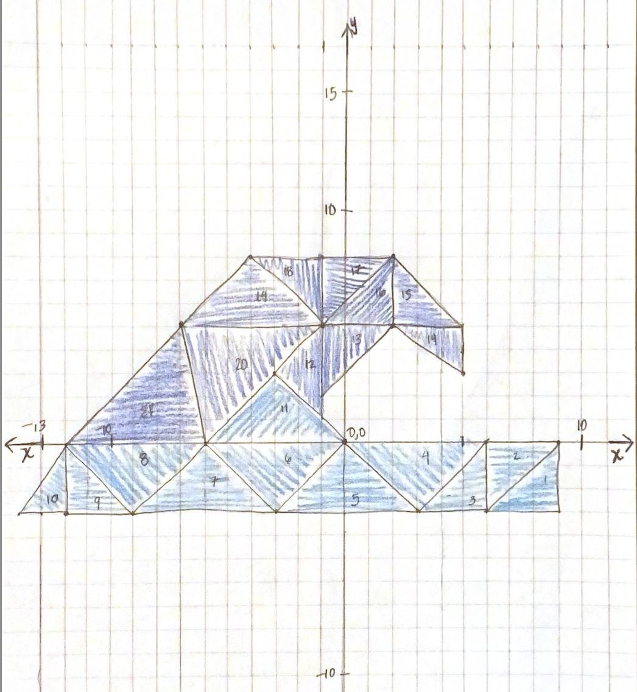

Please use a browser that supports "canvas"

Clear Canvas
Draw Wave
Choose your shape to draw with:
Square
Triangle
Circle
Change the color:
Red
Green
Blue
Shape Size
(Circles) Segment Count
Turn On the RAINBOW POWER ⚡🌈